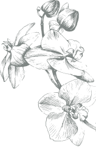
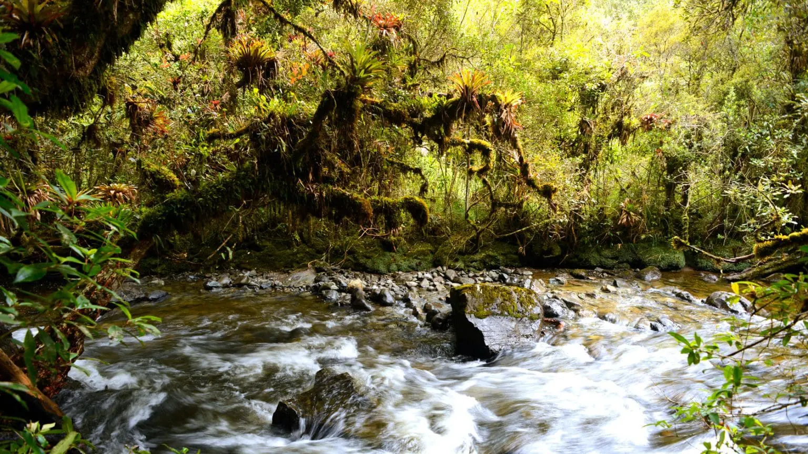
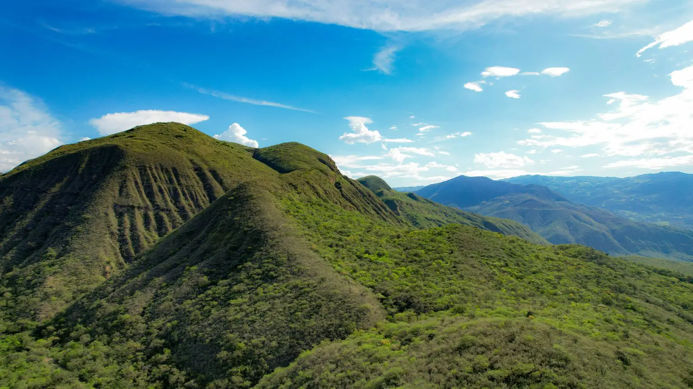
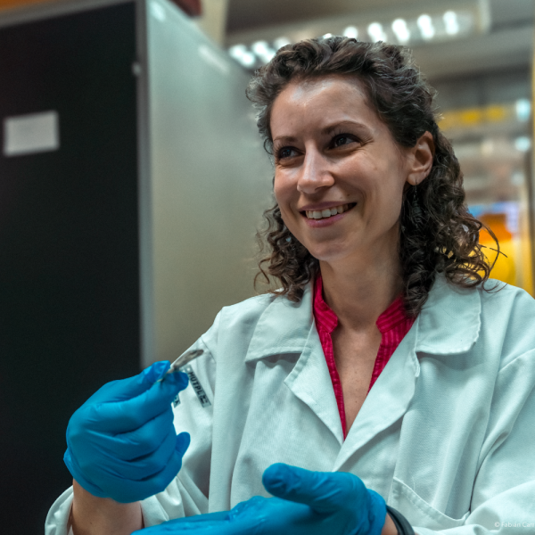
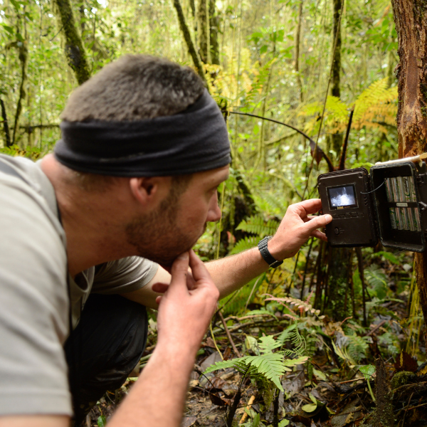
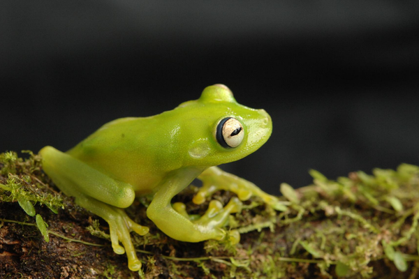

Biodiversidad

Nuestro Trabajo
Protegemos la Biodiversidad conectando Paisajes Naturales
Las especies dependen de su hábitat. Cuando los bosques están sanos y conectados, los animales pueden desplazarse, encontrar alimento y reproducirse. Cuando el hábitat se fragmenta o se pierde, las poblaciones de las especies están en riesgo y el equilibrio del ecosistema comienza a quebrarse.
Naturaleza y Cultura Internacional ayuda a proteger la biodiversidad conservando grandes paisajes en toda América Latina. Nuestro trabajo sostiene el hábitat de 222 especies amenazadas, incluyendo especies emblemáticas como el Jaguar (Panthera Onca), el Oso de Anteojos (Tremarctos ornatus), y el Cóndor Andino (Vultur gryphus), junto con otras especies que son igualmente esenciales para la salud del ecosistema.
La protección de la biodiversidad comienza con la conservación de los bosques conectados que las especies necesitan para prosperar.

Programas Destacados

URGENT
 ECUADOR, PERÚ
ECUADOR, PERÚ
Corredor de Conservación Transfronterizo Andino Amazónico

PERÚ
Bosques Secos del Marañón
Conectividad
Protegiendo y Conectando Hábitats Esenciales
En un mundo cada vez más fragmentado, muchas especies cuentan con menos espacio para migrar, dispersarse, alimentarse y prosperar. Por ello, Naturaleza y Cultura Internacional se enfoca en proteger los hábitats a la escala que la naturaleza requiere.
Ayudamos a conectar ecosistemas más allá de fronteras, para que los animales puedan desplazarse por corredores de bosques saludables en busca de alimento, agua, refugio y zonas de reproducción. Al vincular áreas protegidas nacionales, subnacionales y locales, ayudamos a crear corredores de hábitat vitales para especies amenazadas y de amplio rango de distribución.
Los paisajes conectados permiten que la fauna y flora se adapte a condiciones cambiantes, mantenga poblaciones saludables y reduzca los riesgos asociados con el aislamiento y la pérdida de hábitat. Proteger «islas» de bosque no es suficiente. La conservación es más efectiva cuando los paisajes permanecen sanos y conectados a lo largo del tiempo.

Una Solución Duradera para la Biodiversidad
Proteger la biodiversidad requiere una gestión responsable a largo plazo. Naturaleza y Cultura Internacional trabaja para garantizar que la protección de las especies sea sostenible en el tiempo, combinando la conservación del hábitat con alianzas estratégicas, investigación y liderazgo local sostenido.
Estas alianzas respaldan una protección a largo plazo que beneficia tanto a las personas como a la naturaleza, ayudando a gestionar estos paisajes. Al integrar el conocimiento local y el liderazgo comunitario, la protección de las especies se vuelve más duradera y efectiva.

Transformar la investigación en acción
Monitoreo de especies amenazadas
Naturaleza y Cultura Internacional brinda apoyo técnico y logístico a universidades locales e internacionales, instituciones de investigación y ONG para monitorear y estudiar especies clave y amenazadas. Esta investigación nos ayuda a comprender qué necesitan las especies para prosperar y fortalece las estrategias de conservación que protegen la biodiversidad a largo plazo.
El monitoreo y la investigación no son solo ejercicios académicos. Ayudan a orientar decisiones en el mundo real sobre dónde proteger, cómo fortalecer la gestión responsable y cómo reducir las amenazas a las especies antes de que sea irreversible.

La Importancia de Proteger la
Biodiversidad
Las poblaciones de las especies han disminuido un 73%
en los últimos 50 años.
El monitoreo global muestra que las poblaciones de las especies han
disminuido de manera
marcada en las últimas décadas, debido
principalmente a la pérdida de hábitat. América
Latina, y
particularmente la Amazonía, han experimentado algunos de los
mayores impactos a medida que la deforestación y la fragmentación
se aceleran.
La protección y conectividad del hábitat de las especies
en peligro es clave para
revertir estas tendencias.
Cómo contribuir a la protección de la biodiversidad
Proteger la biodiversidad requiere compromiso y soluciones pensadas para el largo plazo. En Naturaleza y Cultura Internacional trabajamos junto a aliados, gobiernos y comunidades locales para proteger bosques, conservar hábitats conectados y salvaguardar las especies que dependen de ellos.
A través de estas alianzas, impulsamos esfuerzos de conservación que trascienden los ciclos de proyecto y contribuyen a mantener ecosistemas saludables y resilientes en el tiempo.
Conoce más sobre nuestro trabajo
Financieros y
Reportes Medios de
Comunicación Publicaciones Investigaciones Contáctanos Políticas de
Privacidad
Internacional
Naturaleza y Cultura
Internacional
es una
organización
no
gubernamental 501 (c) (e)
EIN: 33-0773524
Del Mar, CA 92014, USA Llámanos +1 (858) 259-0374 Escríbenos hola@naturalezaycultura.org Síguenos en Redes Sociales